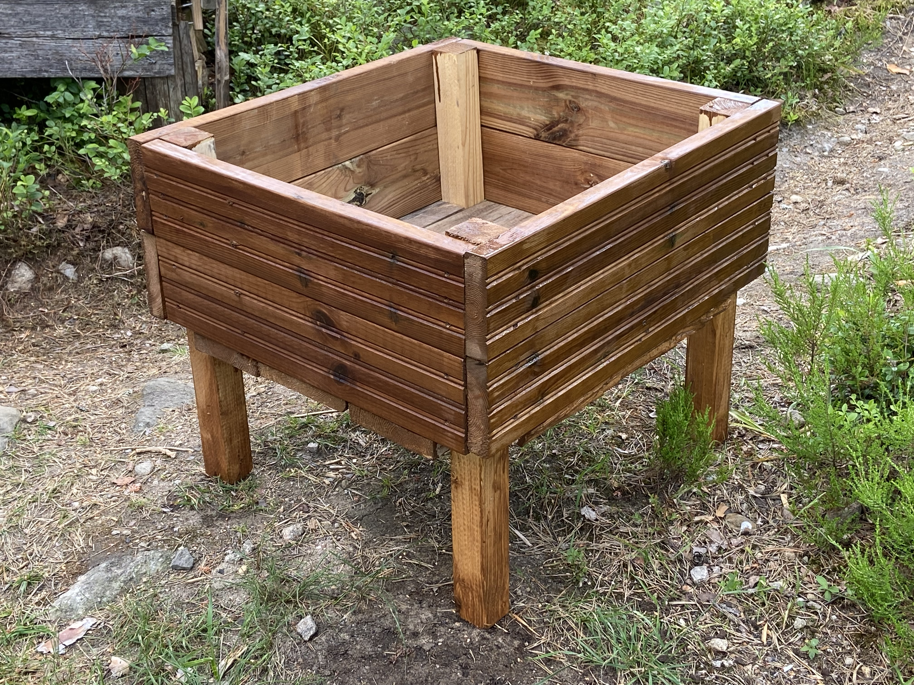
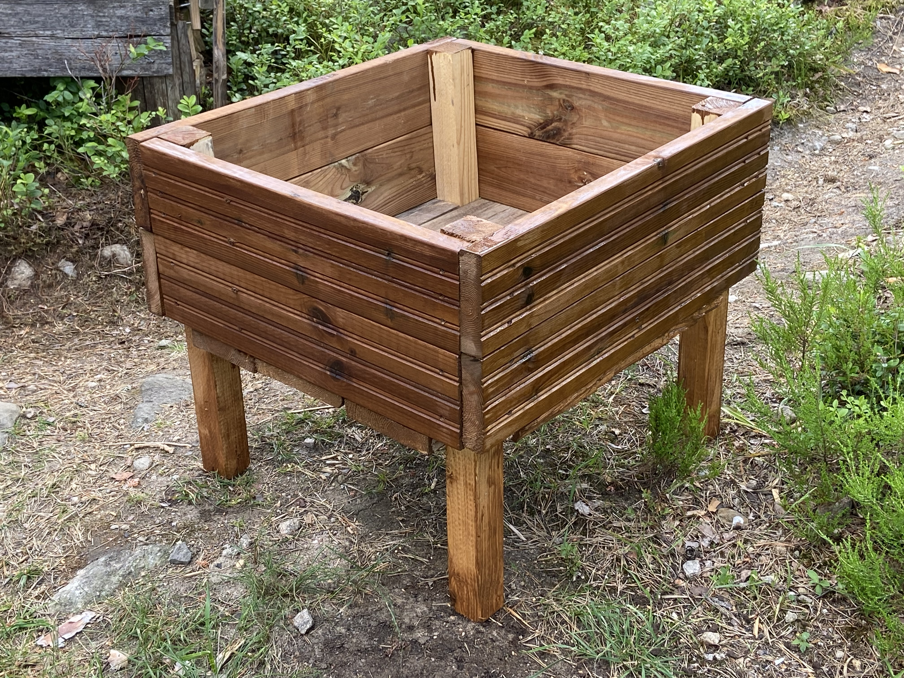

Remontit
Mökin remontointi saaressa on seikkailu ja käytännön työtä, täynnä suunnittelua ja toteutusta
Uusien terassien rakentaminen avaa upeita näköaloja ympäristöön, kun taas maalaustyöt tuovat väriä ja raikkautta.
Seuraavaksi suunnitellaan ja rakennetaan rappuset, patio ja pikkuterassi, jotka täydentävät mökin ilmettä ja tarjoavat viihtyisän oleskelualueen ulkona.
Puuliiteri tuo käytännöllisyyttä ja mahdollistaa polttopuiden säilytyksen.
Maalaustyöt viimeistelevät ulkoasun ja luovat kodikkaan tunnelman.
Veneellä tavaroiden kuljettaminen saareen luo oman elementin ja seikkailun tuntua, kun navigoidaan vesistöjen läpi ja puretaan lastia rantaan.
Luonnon rauha ympäröi, antaen voimaa ja inspiraatiota.
Työn ilo syntyy nähdessä konkreettisen tuloksen omista ponnisteluista, kun saunassa lepää polttopuista lämpiävä tuli ja ympärillä on rauha ja kauneus.
Ideat
Mökin sisustamisessa ja tavaroiden kierrätyksessä on lukuisia luovia mahdollisuuksia, jotka yhdistävät sekä ekologisuuden että persoonallisen sisustuksen. Voit esimerkiksi käyttää vanhoja puulaatikoita istuimina tai pöytinä, tai tehdä niistä hyllyjä seinille. Vanhat purjeet tai kankaat voi muuttaa upeiksi verhoiksi tai tyynyiksi.
Puutarhaan vanhat astiat voivat toimia istutusruukuina, ja vanhoista ikkunaluukuista voi tehdä tunnelmallisen ruokapöydän. Kierrätetyistä puusta valmistetut kalusteet ja sisustuselementit tuovat luonnollista charmia mökin tunnelmaan. Lisäksi voit hankkia käytettyjä huonekaluja ja antaa niille uuden elämän maalaamalla tai kunnostamalla ne.
 

Kirpputoreilta ja kirpputori- tai nettikirppisryhmistä löytyy usein edullisia aarteita mökin sisustukseen.
Tavaroiden uusiokäyttö vähentää jätettä ja antaa samalla persoonallisen ja eettisen kosketuksen mökin sisustukseen.
Näin voit luoda ainutlaatuisen ja ympäristöystävällisen ilmapiirin, joka kutsuu viihtymään ja rentoutumaan mökillä.
Mukaan
Mökillä eväiden valmistelu on tärkeä osa saariseikkailua, ja monipuolinen ruokavalio on avain energian ylläpitoon. Aamiainen voi sisältää kaurapuuroa, tuoreita marjoja ja munakokkelia, tarjoten kestävää energiaa päivän aktiviteetteihin. Lounaaksi voit valmistaa tukevan eväsleivän täytteineen, kuten kinkkua, juustoa ja vihanneksia.
Välipalaksi sopivat hedelmät, pähkinät ja energiapatukat, jotka pitävät nälän loitolla kalastuksen ja melontaretken aikana. Illalliselle voit valmistaa grillattua kalaa tai lihaa, sekä grillattuja kasviksia, jotka antavat energiaa ja maistuvat herkullisilta.
Makkaraillallinen nuotiolla on klassinen mökkikokemus, joka yhdistää ystävät ja perheen iloisen tunnelman äärellä.
Monipuolinen ja ravitseva ruoka luo hyvät eväät mökkiseikkailuihin ja antaa energiaa nauttia saariston kauneudesta ja ulkoilusta
Muista myös juomavesi ja nesteytys retkillä.